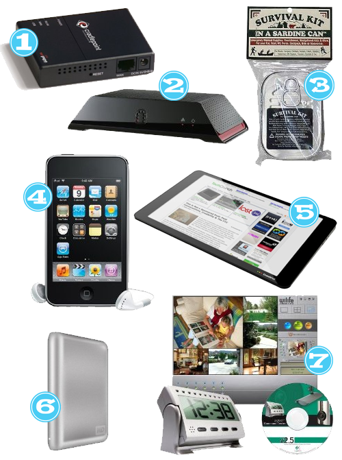

Your Sig-other is always talking about Hertz, or HDMI, or H-something-something-yada-yada-yada, right? If so, here’s a list of gift ideas for the geek on the go. You can also read about my guy gift guide for chef guys.
But a secret about most geeky guys I know — we all like to envision ourselves travelers, even if the most we ever get out is to the grocery store for nonfat organic milk. Wait, I mean the liquor store for liquor, amirite??
umm, ok, so on to the gifts:

- Cradlepoint Travel Router $98 – Plugin your 3G usb card into the router and it creates a wifi hotspot for you. So if your family is driving across the country, you power up your laptop and this cradlepoint into your power inverter (gives you a real power plug from your car), and then watch Hulu all the way to grandma’s house!
- SlingBox Solo $179 – OK, so get this. You leave the slingbox at home, hooked up to your Tivo or cablebox or satellite or whatever. You then go on a trip, get on wifi, and then either with your computer or with your iTouch/iPhone and run the slingbox app (there’s also a blackberry version). Then you watch your home tv live and control it. People, I’m talking pay $8 for hotel internet, then watch your home DVR collection of Lost or the football game from earlier that night. Magic meets the future!
- Survival Kit in a Can $14 – So if your guy is like me, he thinks he could survive on his own in the wilderness. I mean how hard is survivor really ? With this kit, he (and by he I of course mean I) might have a change for another 24 hours on his own. At least until the pizza arrives. I also thought this book on the US Armed Services Survival Guide was cool looking.
- iPod Touch $181 – If he doesn’t have an iPhone, he’ll want this just to download and install apps. I personally make due on the phone side with an old blackberry and use the iTouch (iPod Touch = iTouch) for a ton of stuff. Like the grocery shopping app, or the Amazon Kindle Reader app. Best part = no monthly fees!
- TheJooJoo $499 – ok, so this is a bit risky, but if you want to truly wow your techie sig’other, this is a gift to show him that you like him a lot. The “joojoo” (means magic) was originally going to be the “CrunchPad”, but it morphed into this tablet PC that I personally think is going to rock. At $499 its a bit expensive, but for couch web browsing it will be most awesome.
- Western Digital HardDrive $109 – I’ve had external harddrives before, but honestly they were way too “external” — this fits in your pocket or bag and lets you keep a backup of your videos and pictures. If you have a Tivo, use TivoToGo to copy over shows and movies before your trip … if you don’t have a tivo, umm why?
- Wilife Security System $279 – A security system that you can login into from the road and check out what’s going on at the homestead. Also, it detects motion and starts recording, so if someone does break into your house it’ll have evidence for you. How this hasn’t made CSI yet I have no idea.
Jesse is a guest author; his claim to fame is being Tipsy Society author AK’s husband. He creates websites at http://comalproductions.com.


{kind=link}
{kind=link}
{kind=link}
Recent Comments